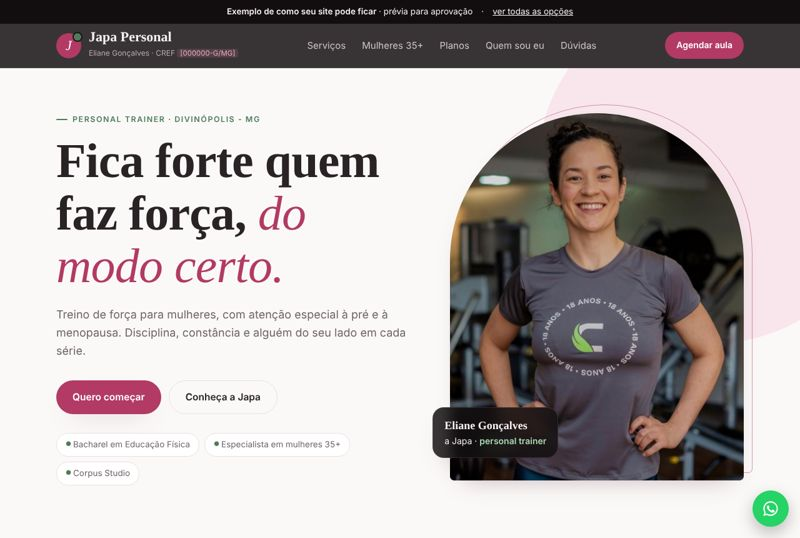
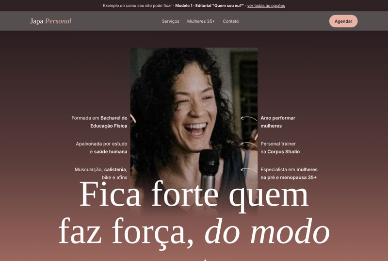
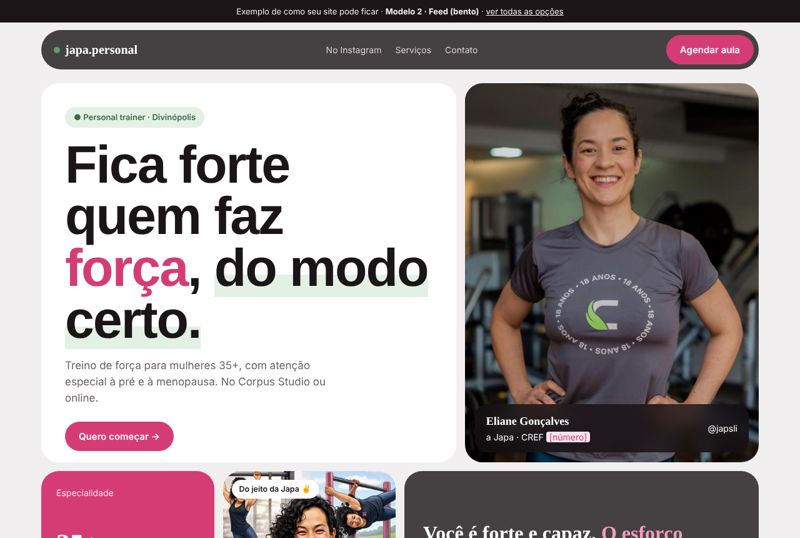
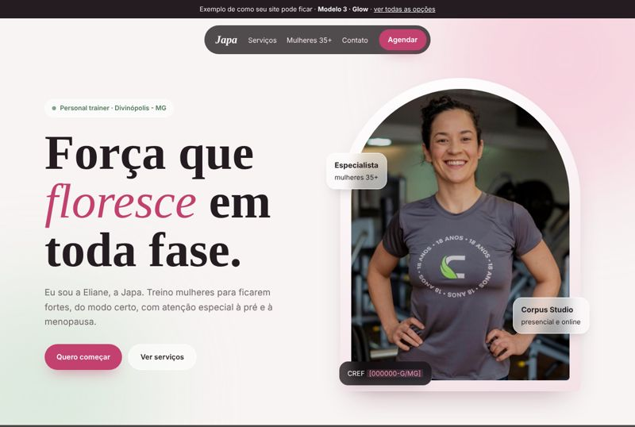
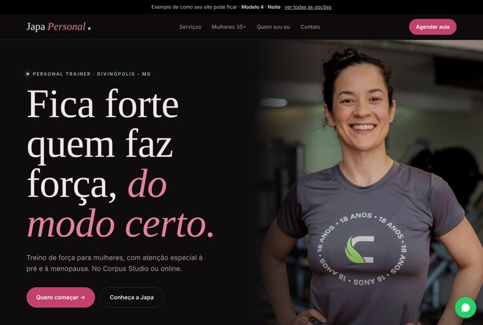

Montei estas opções a partir do seu Instagram. Toque em cada uma para ver no celular. Textos, fotos e cores ainda podem ser ajustados do seu jeito.

Branco e cinza claro, rosé e detalhes em verde, com toques de preto transparente.
Ver opção →
Inspirada no seu post "Quem sou eu?", em tons terracota e rosé.
Ver opção →
Moderna e descontraída, com blocos e os seus reels em destaque.
Ver opção →
Delicada e feminina, com moldura em arco e efeito de vidro.
Ver opção →
Escura e sofisticada: preto, cinza, rosa e detalhes em verde.
Ver opção →O que está marcado entre [colchetes] (CREF, WhatsApp, horários, depoimentos) a gente completa juntas. Algumas fotos são ilustrativas e serão trocadas pelas suas.